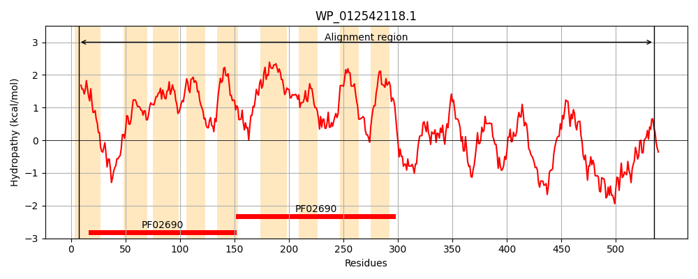
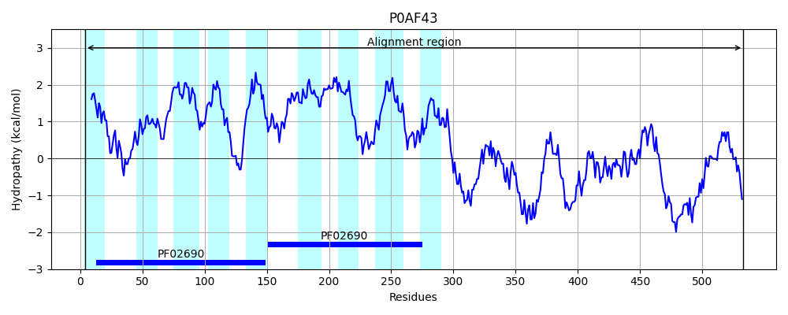
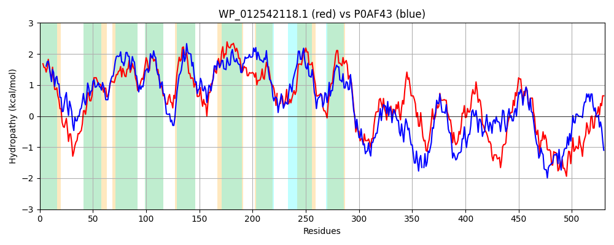

Hit Accession: P0AF43
Hit TCID: 2.A.58.2.1
Hit Description: gnl|BL_ORD_ID|8806 gnl|TC-DB|P0AF43|2.A.58.2.1 Uncharacterized protein yjbB - Escherichia coli.
Mach Len: 531
e:0.000000
Query TMS Count : 9
Hit TMS Count: 9
TMS-Overlap Score: 8.250000
Predicted Substrates:CHEBI:7793;phosphate(3-)
BLAST Alignment:
Score: 738 , Bit scores: 288 bits, E-value: 7.1e-91, Alignment length: 531, Percentage identity: 31
Query: 7 LIHLAGAIALLLWGSHMISTALQRGFGTPLRNWMGRHLTNRWTALLSGIGITGILQSSTAVSMMATSFTAAGTLSLAPALAVMLGANIGSTLVVQLMSFNMEIAIPLLLLAGFVVFKLRDHSSFESVGCALIGLGLMLLALHLLGGTLQDIEVTPVFHAVMQGLQGDIFIALLVAALLTLLCHSSVAMILLIASLAGTGTLTPSTALVLVLGANIGGALPPVLN--AGSAVARRLPVGNLMVRLSGCALALLLLPLLMAIARKSGLNTPQLVVWFHTAFSVALALLFIGLNVPMARFLERLFPEEERVGDPGMPMYLDDAGLEVAYIGLSNSVRESLRAADMLTIMLDRLLMLFVTQEKQAADDIRQLEQSVDLLSAAVRAYLADIGQDGLNDADADRAQEILMFIINVEHAGDILSSNLTQLATRRARRGEHFNDFELHHIRLLHAELLTSLNLGIAAFLREDLSAAHQLVQRKETIRQLEASASREHFKKLREDKNAWAESGDIFQRVLRDYRRVHHHIAAVAYPVIDR 535
L+HL A+ALL+WG+H++ T + R FG LR + R + + A +GIG+T ++QSS A +M+ TSF A ++LAPAL ++LGA++G+ L+ ++++F++ PLL+ G + F R S +G IGLGL+LLAL L+ + I + L GDI + L+ A+ ++ +SS+A +LL A+L G ++ AL LV+GAN+G L +LN A +A ARR+ +G+L+ +L G + L + LL K L +LV++FH +++ L+ + PMARF + + +E + P +LD + L+ + L+N+ RE+LR D + M++ L + + +Q ++R+L +++L A++ YLA + ++ L + ++ R EI+ +N+E A DI+ +++A + F+ L + L+ +LL++L L ++ F D+++A +L + K R L S H +L + E+ + +L D +R++ +VAY V+++
Sbjct: 4 LLHLLSAVALLVWGTHIVRTGVMRVFGARLRTVLSRSVEKKPLAFCAGIGVTALVQSSNATTMLVTSFVAQDLVALAPALVIVLGADVGTALMARILTFDLSWLSPLLIFIGVIFFLGRKQSRAGQLGRVGIGLGLILLALELIVQAVTPITQANGVQVIFASLTGDILLDALIGAMFAIISYSSLAAVLLTATLTAAGIISFPVALCLVIGANLGSGLLAMLNNSAANAAARRVALGSLLFKLVGSLIILPFVHLLAETMGKLSLPKAELVIYFHVFYNLVRCLVMLPFVDPMARFCKTIIRDEPELDTQLRPKHLDVSALDTPTLALANAARETLRIGDAMEQMMEGLNKVMHGEPRQ-EKELRKLADDINVLYTAIKLYLARMPKEELAEEESRRWAEIIEMSLNLEQASDIVERMGSEIADKSLAARRAFSLDGLKELDALYEQLLSNLKLAMSVFFSGDVTSARRLRRSKHRFRILNRRYSHAHVDRLHQQNVQSIETSSLHLGLLGDMQRLNSLFCSVAYSVLEQ 533 | Protein Hydropathy Plots: |
|---|
|  |  |
Pairwise Alignment-Hydropathy Plot:
|
|---|
|  |